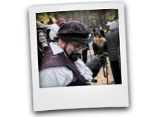
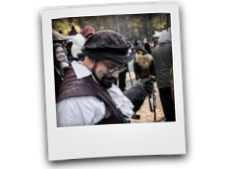

Falknerei
Unter Falknerei ist genauer die Beizjagd gemeint und man versteht darunter das Abrichten un das Jagen mit Hilfe eines Greivogels. Obgleich es der deutsche Name nahelegt werden bei der Falkneri auch andere Greifvögel als "Falken" eingesetz.
Zum Wesen einer Falknerei gehört auch die Aufzucht und die Pflege von Greifvögeln, die für die Jagd geeignet sind. Bevorzugtes Ziel bei der Jagd sind Feder und Haarwild
Der Verband Deutscher Falkner (VDF) ist der jüngste unter den großen Falknerverbänden Deutschlands. Er stellt eine Vereinigung praxisorientierter Falkner, Ornithologen und Greifvogelfreunde dar.